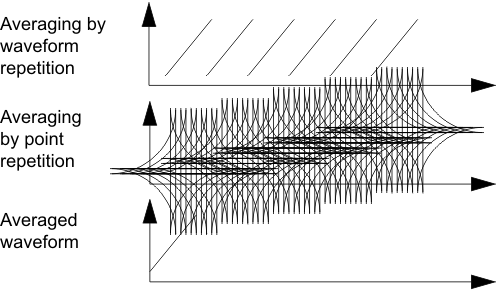
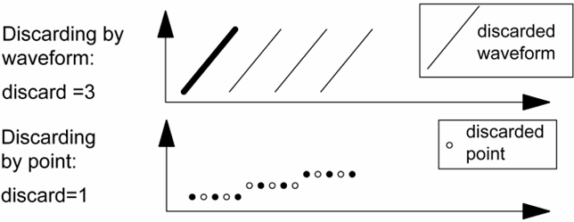

Waveform/Point Averaging and Discard => "Processed Waveform"
Provided are:
- Software averaging by point
- Software averaging by waveform
- Software discard by point
- Software discard by waveform
They are performed on a captured waveform at workstation level.
The result of software averaging and discard is called "Processed Waveform". Any further DSP algorithms that are performed to determine the static or dynamic parameters of your DAC are performed on this processed waveform.

If averaging by 3 points is specified then instead of n data points n×3 data points will be captured. The mean value of each group of 3 data points is calculated.

If waveform discarding by 1 is specified, every second waveform is discarded. If discarding by point with a discard value set to 1 is specified, every second sample is discarded.
Software averaging and discarding can be used in any combination.